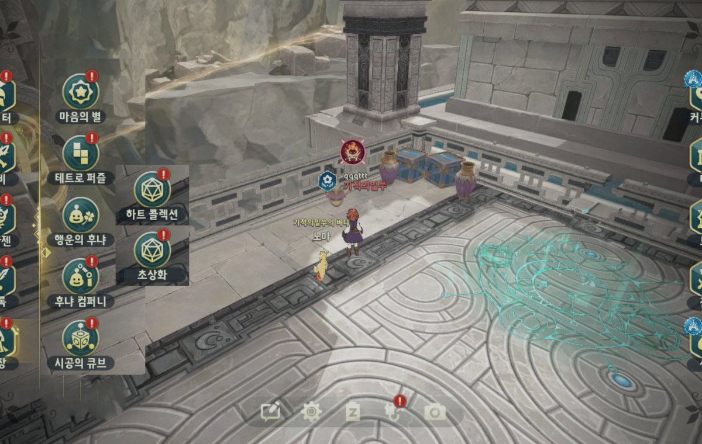
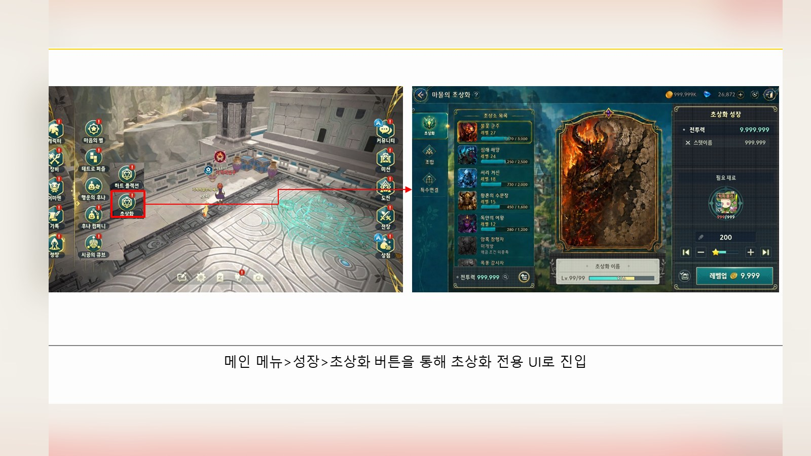
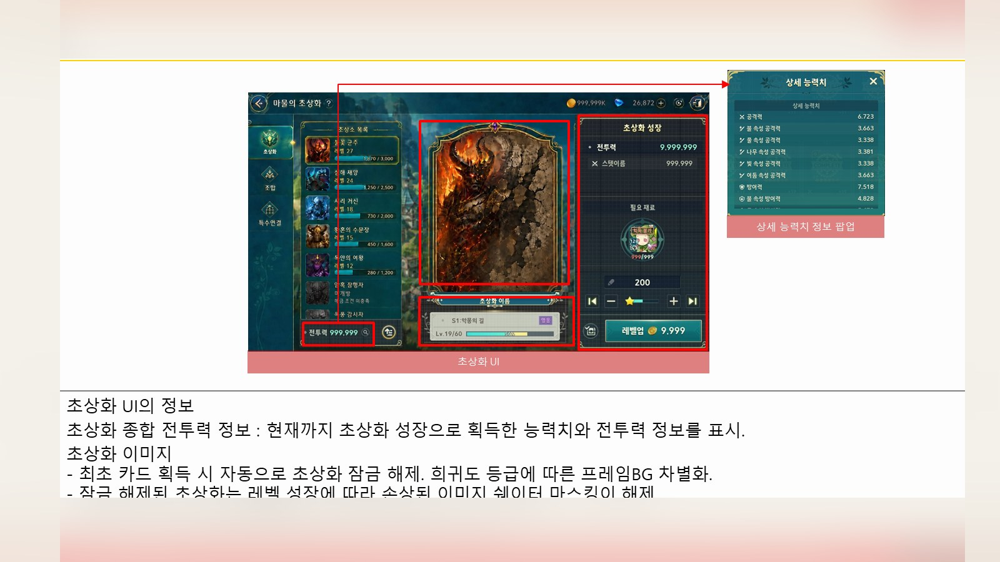
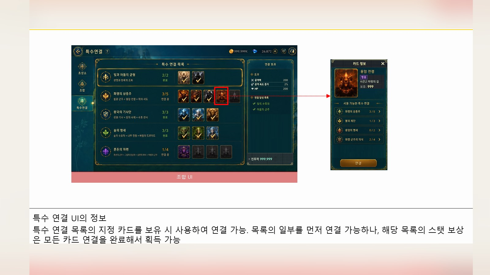
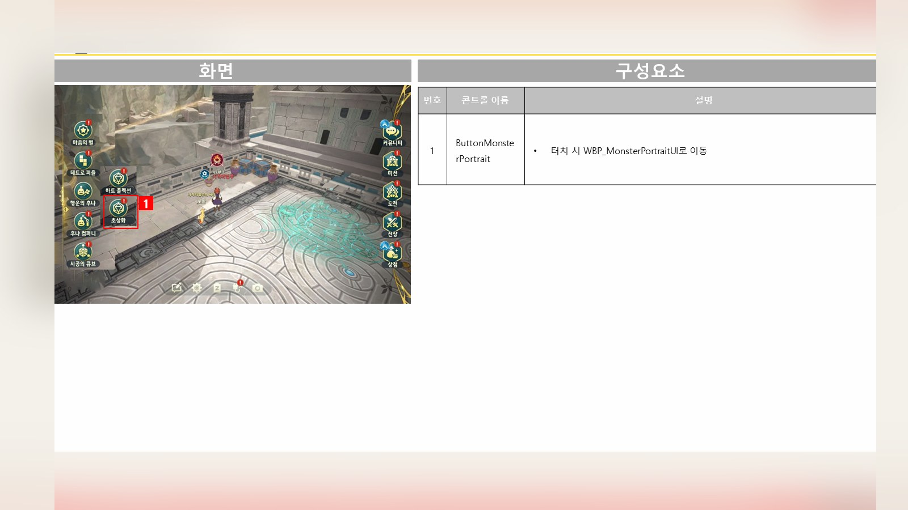
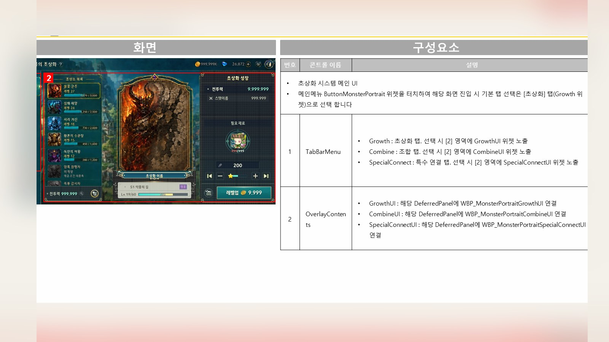
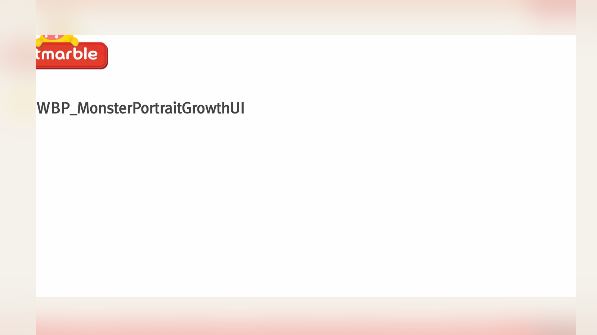

Planning Context
어떤 기획이었나
- 컬렉션형 시스템은 수집, 조합, 연결, 성장 결과가 복합적으로 얽혀 있어 정보 구조가 중요합니다.
- 새 시스템의 첫 진입에서 유저가 목표와 보상, 조작 방식을 빠르게 이해해야 합니다.
ProjectN · Collection System
초상화 시스템의 조합, 특수 연결, 성장/수집 구조를 정리한 컬렉션 시스템 UX 사례입니다.

Planning Context
Process
Deliverables
Result
컬렉션 시스템의 수집, 조합, 연결 흐름을 하나의 성장 UX로 묶어 신규 시스템 이해도를 높이는 방향으로 정리했습니다.
Deliverable Captures
원본 문서는 포함하지 않고, 포트폴리오 확인용으로 일부 페이지만 이미지화했습니다. 슬라이드 마스터/상하단 영역은 흐림 처리했습니다.





